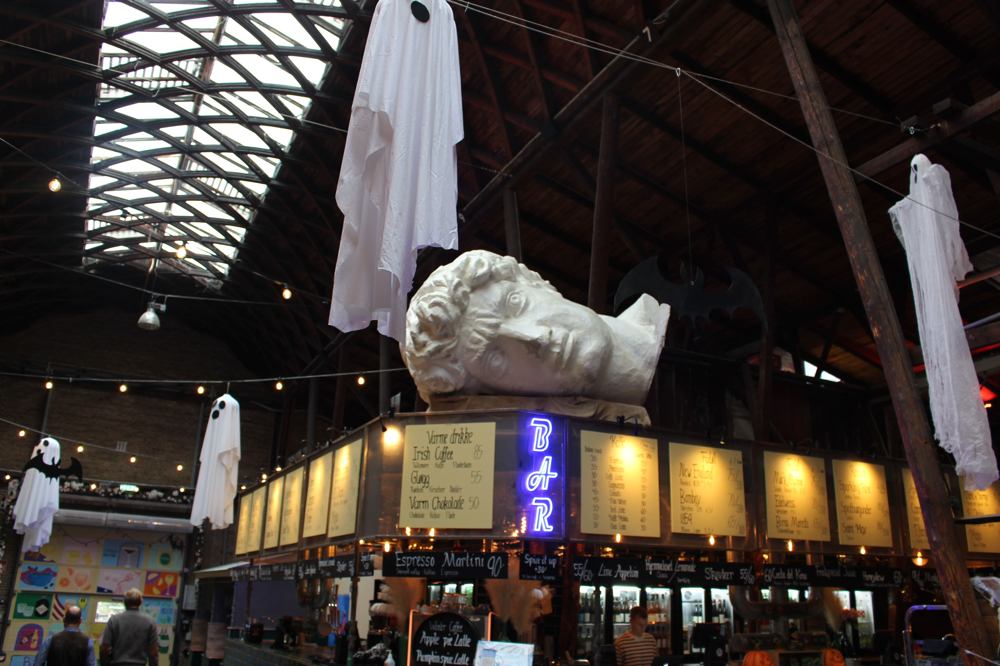
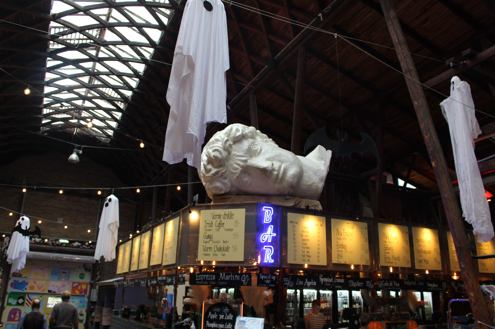

J’ai passé la journée à Odense, à 2 h de bus de Copenhague, pour voir Baptiste et Claire. Le lever pour le bus a été un peu difficile, mais j’y suis allée vaillamment. J'ai rejoint Baptiste, on s'est beaucoup promenés. On a vu la maison d’Andersen, et son musée, car c’est sa ville natale. On n’est pas entrés dedans, ça ne vaut pas vraiment le coup apparemment (la maison est toute petite et vide). On est entrés dans la cathédrale, toute en briques.
On a mangé grec, dans un marché couvert. Il pleuvait énormément, mais on a continué de se promener, puis on a fait une pause dans un café. Après, on est allés attendre le bus, qui était en retard d’une heure. Mais tout va bien, Flixbus nous accorde 15 % de remise sur notre prochain trajet.
 
